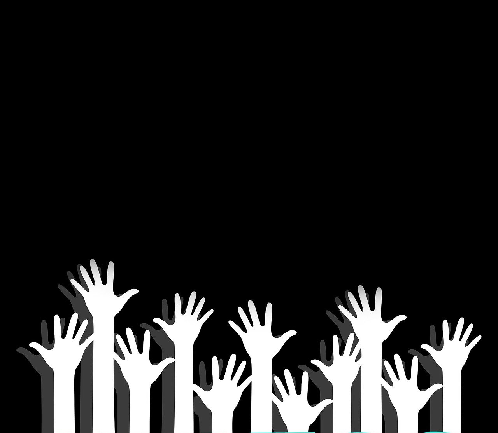

Get Involved
There are various ways you can support the museum. Donations are very welcome and are an important way we keep this
museum open and accessible to the whole community.
You can also support us by donating items of interest to the museum’s collections. If you have some item or
collection that you think others would enjoy, please let us know by contacting our Collections Department and they
will be able to assist you.

A number of people volunteer their time to keep the displays in good order and ready for
visitors to enjoy. Volunteering has its perks including getting to see behind the scenes, access to staff-only
lectures, and a monthly lunches.

Are you interested in working in a museum? Do you enjoy the fun and excitement of sharing the wonders of nature with
people? Well you could be just the right person to enjoy an internship at the museum.